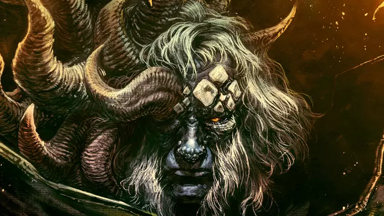
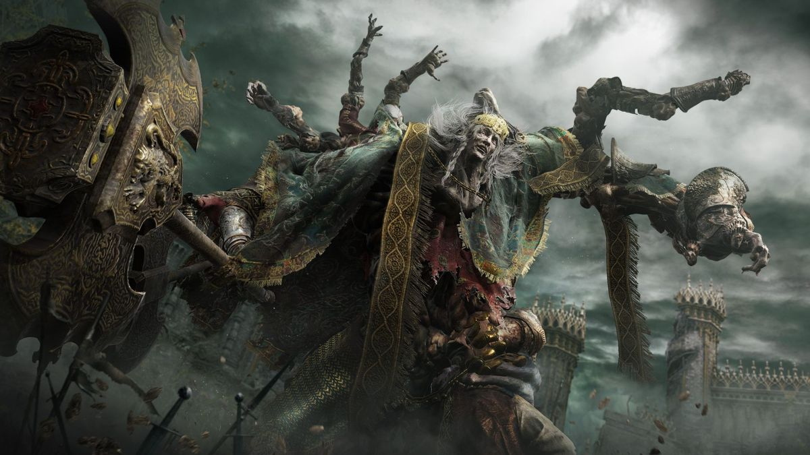
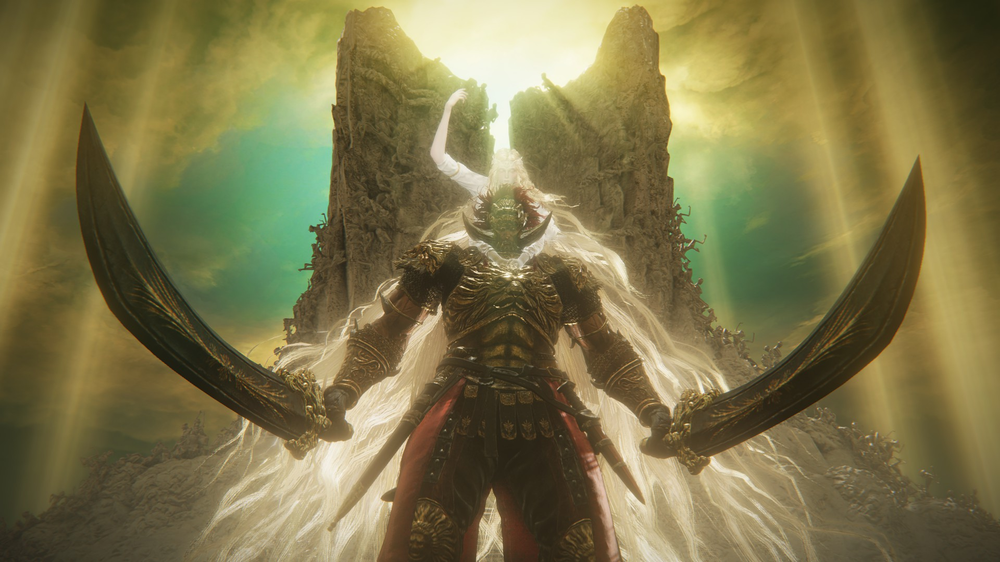
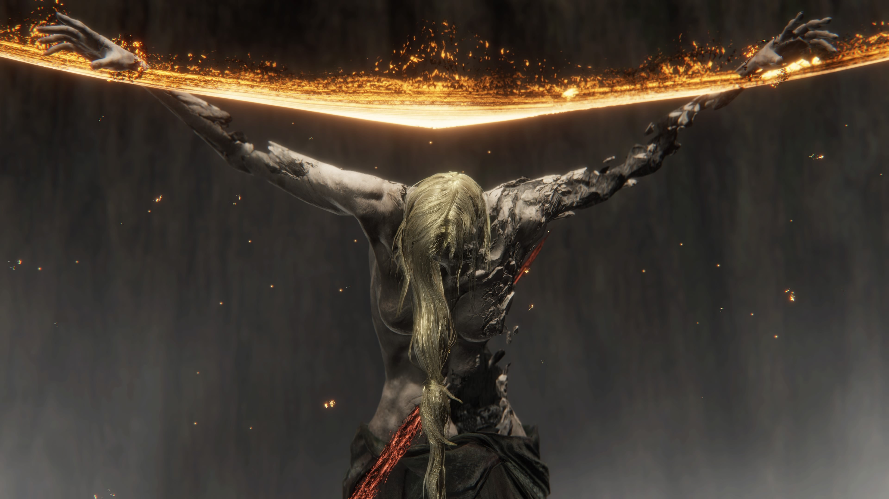

Os Grandes Chefes
Criaturas de poder imenso que guardam as Runas Maiores nas Terras Intermédias

MédioMargit, o Presságio Sombrio
O primeiro grande guardião das Terras Intermédias. Margit bloqueia o caminho para Godrick com ataques rápidos e um martelo sagrado feito de luz pura. Muitos Maculados encontram aqui seu fim definitivo, (por ser o primeiro chefe apanhei muito. Mortes: 20).

Difícil SEMIDEUSGodrick, o Enxertado
Neto mais fraco da Rainha Marika, Godrick compensou sua fraqueza enxertando membros de outros seres em seu corpo. Na segunda fase, enxerta um dragão no próprio braço para atacar com fogo, (complicado mas depois de pegar o padrão é tranquilo. Mortes: 7).
 Médio
Médio
Rennala, Rainha da Lua Cheia
Ex-líder da Academia e mãe dos semideuses Ranni, Radahn e Rykard. Luta com magia lunar devastadora e invoca criaturas refeitas pelo seu amor incondicional, (apesar da magia não é tão forte. Mortes: 2).

Lendário SEMIDEUSRadahn, Flagelo das Estrelas
O maior guerreiro das Terras Intermédias. Usa gravidade para manter as estrelas presas no céu. Na segunda fase, cai do céu como um meteoro destruidor, (realmente difícil, mas aprendi a lidar com as tentativas. Mortes: 15).
 Extremo
OPCIONAL
Extremo
OPCIONAL
Malenia, Lâmina de Miquella
A chefe mais difícil do jogo. Ela restaura Vida a cada golpe que acerta — mesmo se bloqueado. Sua Dança das Pétalas é o ataque mais icônico e letal dos games, (morri mais de 70 vezes para derrota-lá).

💀 Final CHEFE FINALA Besta Élfica
A encarnação do Anel Prístino e do Grande Vontade. A batalha final é precedida por Radagon de Estrela Dourada. Usa poder sagrado colossal e invoca espadas douradas do cosmos. Derrotá-la determina o destino eterno das Terras Intermédias, (chefe sem padrão, muito difícil de encarar. Mortes: 43).